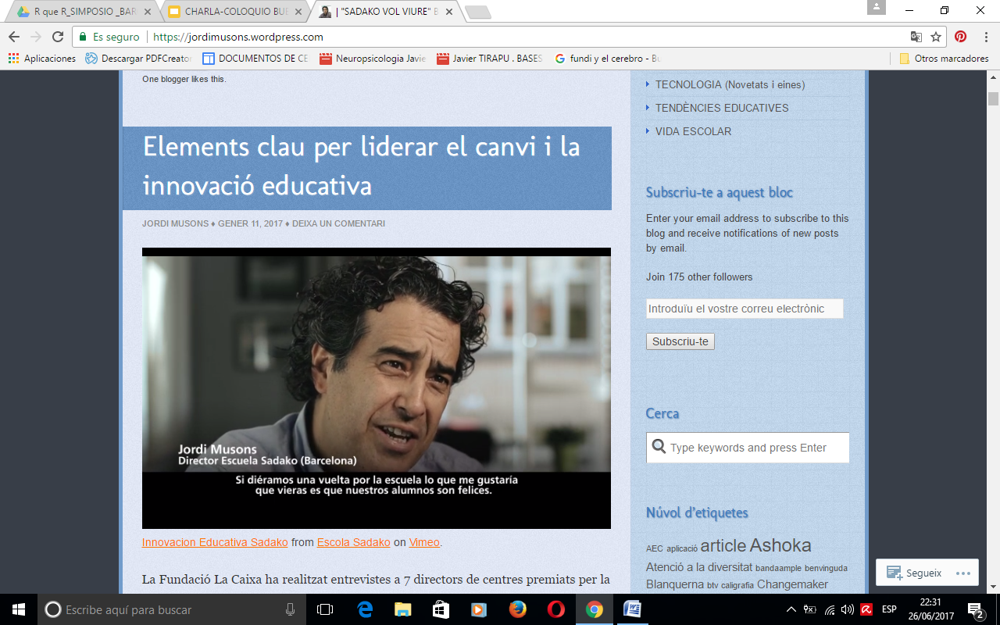

CONCRECIONES CURRICULARES: PROYECTO CURRICULAR DE ETAPA (PCE)
La LOE/LOMCE establece la concreción de los currículos establecidos por la Administración educativa dentro del macro proyecto educativo. Si bien, los legisladores, conscientes de su complejidad, han determinado que sean las Administraciones educativas quienes deberán concretar, orientar y apoyar a los centros para la elaboración del proyecto educativo.
En Aragón, las concreciones curriculares y la orientación de los procesos de enseñanza se siguen vinculando al Proyecto Curricular como documento de referencias en el ámbito curricular y pedagógico.
El Proyecto Curricular es el documento que define las enseñanzas y marca directrices que posibilitan el desarrollo y contextualización de los currículos en cada centro; asegura la coherencia con el Proyecto Educativo y establece orientaciones concretas para diversos ámbitos: objetivos, metodología, evaluación y proyectos a desarrollar.
Se elabora, para cada etapa, tomando como referencia el Proyecto Educativo del centro y es un documento en el que el profesorado de una etapa educativa concreta y desarrolla las estrategias de intervención didáctica con el fin de asegurar la coherencia de la práctica docente.
Tiene como finalidades:
- Aumentar la coherencia de la práctica a través de la toma de decisiones conjuntas por parte del equipo docente de la etapa.
- Aumentar la competencia docente del profesorado a través de la reflexión sobre su práctica. Reflexión para hacer explícitos los criterios que justifican las decisiones tomadas en el Proyecto Curricular.
- Adecuar al contexto las prescripciones establecidas en los currículos.
En aquellos centros donde se cursen varias etapas educativas, los Proyectos Curriculares de Etapa habrán de insertarse en un Proyecto Curricular de Centro que recoja de manera integrada y coordinada las etapas que se impartan en el mismo.
La Comisión de Coordinación Pedagógica deberá establecer las directrices generales para la elaboración y revisión de los Proyectos Curriculares de Etapa y de las Programaciones didácticas, incluidas en estos, con anterioridad al comienzo de la elaboración de dichas programaciones. Asimismo, la Comisión deberá establecer durante el mes de septiembre, y antes del inicio de las actividades lectivas, un calendario de actuaciones para el seguimiento y evaluación de los Proyectos Curriculares de Etapa y de las posibles modificaciones de los mismos
La elaboración y el contenido de los Proyectos Curriculares de Etapa, así como la revisión del PCE, se ajustará a lo dispuesto en el artículo 20 de la Orden de 16 de junio de 2014, modificada por la ORDEN de 21 de diciembre de 2015 y por la Orden ECD/850/2016, de 29 de julio, así como en el apartado 2.1.2. de las Instrucciones que regulan la organización y el funcionamiento de los Colegios Públicos de Educación Infantil y Primaria y de los Colegios Públicos de Educación Especial de la Comunidad Autónoma de Aragón.
El Proyecto Curricular de Etapa (PCE), de acuerdo con lo establecido en la citada orden por la que se aprueba el currículo de la Educación Primaria y se autoriza su aplicación en los centros docentes de la Comunidad Autónoma de Aragón, contendrá:
a) Las directrices generales siguientes:
- Contextualización de los objetivos generales de la Educación Primaria en el centro.
- Líneas pedagógicas del centro.
- Procedimiento para desarrollar la evaluación de los aprendizajes de los alumnos.
- Disposiciones sobre la promoción del alumnado.
- Información esencial a las familias sobre el aprendizaje y evaluación de los alumnos.
- Criterios y estrategias para la coordinación entre áreas de conocimiento, niveles y etapas.
- Procedimientos para evaluar los procesos de enseñanza y la práctica docente.
c) El Plan de utilización de las Tecnologías de la Información y la Comunicación (TIC).
d) Plan Lector: Estrategias de animación a la lectura y desarrollo de la expresión y comprensión oral y escrita en todas las áreas de conocimiento de la etapa.
e) Plan de implementación de elementos transversales.
f) Proyecto bilingüe y/o plurilingüe, en su caso.
g) Proyectos de innovación e investigación educativa, en su caso.
h) Programaciones didácticas elaboradas por cada uno de los Equipos Didácticos, reguladas en el artículo 21 de la orden por la que se aprueba el currículo de la Educación Primaria y se autoriza su aplicación en los centros docentes de la Comunidad Autónoma de Aragón.
El procedimiento de elaboración y el contenido del Proyecto Curricular de Etapa (PCE) se ajustarán a lo dispuesto en el artículo 49 del Reglamento Orgánico de las Escuelas de Educación Infantil y los Colegios de Educación Primaria y en el artículo 20 de la Orden de 16 de junio de 2014, de la Consejera de Educación, Universidad, Cultura y Deporte, por la que se aprueba el currículo de la Educación Primaria y se autoriza su aplicación en los centros docentes de la Comunidad Autónoma de Aragón
El Claustro de profesores aprobará los aspectos educativos de los Proyectos Curriculares de Etapa y cuantas modificaciones se incorporen al mismo. En aquellos centros donde se cursen varias etapas educativas, los Proyectos Curriculares de Etapa habrán de insertarse en un Proyecto Curricular de Centro que recoja de manera integrada y coordinada las etapas que se impartan en el mismo.
El profesorado del centro organizará sus actividades docentes de acuerdo con el currículo oficial de la etapa educativa y en consonancia con los respectivos Proyectos Curriculares de Etapa. La Dirección del centro deberá fomentar el trabajo en equipo de los maestros de un mismo Equipo Didáctico y garantizar la coordinación entre los mismos.
Una vez elaborado o modificado, el Proyecto Curricular de Etapa o enseñanza será sometido a la aprobación del Claustro de Profesores en sus aspectos educativos antes de transcurridos quince días desde el comienzo de las actividades lectivas. Cuando esté aprobado, se incorporará a la Programación General Anual.
Los Proyectos Curriculares de Etapa serán evaluados anualmente por el Claustro de profesores. Las propuestas de valoración y de modificaciones del Proyecto Curricular de Etapa, si las hubiese, serán presentadas por la Comisión de Coordinación Pedagógica al Claustro de profesores en el mes de septiembre, para su discusión y aprobación. Cuando se introduzcan modificaciones, se deberán respetar las decisiones que afecten a la organización de los contenidos seguidos por los alumnos que hubieran iniciado sus estudios anteriormente.
Para saber más.
Os aconsejo visitar las siguientes páginas web:
Departamento de Educación del Gobierno de Aragón. (2019). Página dedicada a la innovación educativa en Aragón. Recuperado de http://innovacioneducativa.aragon.es/
Escuela rural de Pitarque - Territorio Vivo ATV (2019, noviembre, 4). Conocer la escuela de Pitarque como ejemplo de un proyecto innovador.
Innovación Educativa Sadako (2019, noviembre, 4). Escola Sadako.
Innovacion Educativa Sadako from Escola Sadako on Vimeo.


Curso para funcionariado en prácticas (0597) por varios autores bajo licencia Creative Commons Reconocimiento-NoComercial-CompartirIgual 4.0 Internacional License.